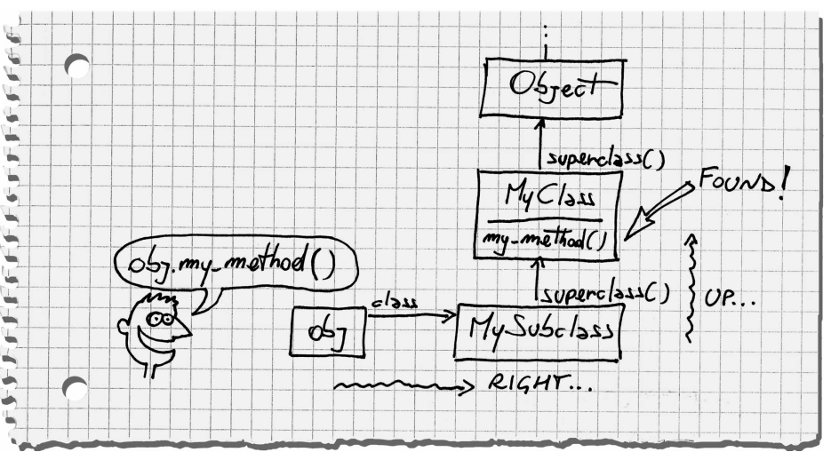

所谓元编程
Metaprogramming is writing code that writes code.
The Object Model
Open Classes
class 关键字并不仅仅是声明一个类，可以把他想象成打开了这个类的上下文，便可在这个区域内定义这个类的方法。
### 所以这样的代码也就可理解的了
3.times do
class C
puts "Hello"
end
end
### output
Hello
Hello
Hello
使用 class的时候，如果这个类还不存在，则Ruby会声明这个新类。如果已经存在，则是重新打开他，而不是重新定义这个类。
class D
def x; 'x'; end
end
class D
def y;'y'; end
end
obj = D.new
obj.x # => "x"
obj.y # => "y"
所以在Ruby运行时中也可以重新打开任意一个已存在的类，包括标准类库，然后可以更改它。
使用Open Class 的时候要注意别不小心覆盖掉已经存在的方法。
Monkey Patch
monkey patch 就是指在运行时更改某个类的结构。https://en.wikipedia.org/wiki/Monkey_patch 。monkey patch 是个贬义词？
The Truth About Classes
“object,” refers to a particular instance of a class.
–英文维基百科:Object_(computer_science)
class A;end 定义一个类A，A在这里其实是一个常量（Constant），它指向Class的一个实例。在Ruby 中所有类名都是这样的一个常量。
A.new 返回A实例。实例变量，跟这个类（A）没有关系，实例变量只在这个类的对象中，一旦对实例变量赋值了它才存在。与Java表现出来的完全不同。
obj.instance_variables
Object that share the same class also share the same methods,so the methods must be stored in the class, not the object.
对象的方法，也称类的实例方法，同一个类的不同对象共享相同的方法.对象的方法都存储在其类中，obj只是保存了到其类(.class)的引用。
String.instance_methods == "abc".methods # => true
String.methods == "abc".methods # => false
如果没有为A定义任何类方法，那么
A.methods == Class.instance_methods # => true
如果为A定义一个类方法，
class A
def self.foo
"foo"
end
end
那么:
A.methods == Class.instance_methods # => false
既然A是Class的实例，A的方法就是就是Class的实例方法，但是:foo并没有在Class的实例方法里面，怎么解释呢？我也不知道。看来读完第一章对Class的理解还不全面。
A是Class的实例，Class也是Class的实例,他们是class这个类的不同对象,而foo这方法是存储在A(Class的一个实例,而且是单例(singleton))里面。这个方法也称为A的单例方法（见Eigenclasses）。
在ruby中,还可以这样定义方法:
def obj.method_name;end
跟上面的定义是一样的道理。
Module & Class
Class 继承自 Module， 多了 [:superclass, :allocate, :new]。
Usually, you pick a module when you mean it to be included somewhere (or maybe to be used as a Namespace), and you pick a class when you mean it to be instantiated or inherited.
如果准备把代码导入到其他地方，或者需要一个命名空间，那么使用module。
如果是一般类用法，如实例化，继承。那么用class。
Constant
常量（Constant） 是一个以首字母大写的驼峰式命名的变量，Ruby会把首字母大写的变量当初常量类和模块的名称也是一个常量。比如A就是main里面的一个常量，常量与本地变量不同，它的作用域在于当前命名空间。
module M
Y = 'another constant'
class C
X = 'a constant'
::M::Y # => "another constant"
end
C::X # => "a constant"
end
M::C::X # => "a constant"
重新初始化常量会有警告。
总结
Object, a bunch of instance variables, plus a link to a class.
Class, just an object instnce of Class, plus a list of instance methods and a linkto a superclass.
Method Call
方法调用的过程:
- 找到这个方法
- 执行它
似乎在各种语言中都是一样的。
Method Lookup

通过ancestors方法可以获得方法调用的查找路径。
MySubclass.ancestors # => [MySubclass, MyClass, Object, Kernel, BasicObject]
在这里Kernel并不是Object的超类，而是 Object 导入的一个模块。
如果我们在某个类中导入某个模块，那么这个模块也会出现在，这个类的ancestors中。
module M
def my_method
'M#my_method()'
end
end
class C
include M
end
class D < C; end
D.new.my_method() # => "M#my_method()"
D.ancestors # => [D, C, M, Object, Kernel, BasicObject]
Kernel
Kernel 里定义了一下看起来像ruby关键字的方法，如p,puts,proc,class,etc.
这些方法你可以在Ruby代码的”任意地方”调用，其实它们都是Kernel 的私有实例方法
Kernel.private_instance_methods
私有实例方法不能强制加上接收器（reciever），如"foo".puts是不合法。
还可以重新打开 Kernel 来定义自己的”关键字”。
module Kernel
def gem(gem_name, *version_requirements)
# ...
Method Execution
Ruby 中的每一行代码都是在对象里执行的，这个对象可称之为当前对象(current object)。self 关键字就是指向这个对象的引用。
class MyClass
def testing_self
@var = 10 # An instance variable of self
my_method() # Same as self.my_method()
self
end
def my_method
@var = @var + 1
end
end
obj = MyClass.new
obj.testing_self # => #<MyClass:0x510b44 @var=11>
在方法里面的self变成了这个方法的接收者，所有@var就是obj的实例变量。
「If you want to become a master of Ruby,you should always know which object has the role self at any given moment.」
回到Kernel
Kernel 的私有方法在可以在”任意地方”调用，为什么加上引号呢？因为这是错的。
class MyClass < BasicObject
puts "MyClass" # => MyClass 因为这里面self => MyClass
# MyClass 是 Class 的对象
def method_1
puts "method_1"
end
end
obj = MyClass.new
obj.method_1
# => NoMethodError: undefined method `puts' for #<MyClass:0x2026bf7c>
因为Kernel 是Object导入模块，如果你的类不继承Object那就不能调用那些看起来像是Ruby关键字的方法了。
MyClass.ancestors # => [MyClass, BasicObject]
Metaprogramming Ruby 并没有说明这种情况。参考: http://stackoverflow.com/questions/6258512/ruby-methods-without-class
private method
在ruby中，所谓私有方法就是不能显性声明接收者的方法。如果没有显性声明接收者，那么其接收者便是self，而self就是当前对象，所以私有方法便只能在当前对象里调用。像这样调用私有方法：
class C
def public_method
self.private_method
end
private
def private_method; end
end
总结
- An object is composed of a bunch of instance variables and a link to a class.
- The methods of an object live in the object’s class (from the point of view of the class, they’re called instance methods).
- The class itself is just an object of class Class. The name of the class is just a constant.
- Class is a subclass of Module. A module is basically a package of methods. In addition to that, a class can also be instantiated (with new( )) or arranged in a hierarchy (through its superclass( )).
- Constants are arranged in a tree similar to a file system, where the names of modules and classes play the part of directories and regular constants play the part of files.
- Each class has an ancestors chain, beginning with the class itself and going up to BasicObject.
- When you call a method, Ruby goes right into the class of the receiver and then up the ancestors chain, until it either finds the method or reaches the end of the chain.
- Every time a class includes a module, the module is inserted in the ancestors chain right above the class itself.
- When you call a method, the receiver takes the role of self.
- When you’re defining a module (or a class), the module takes the role of self.
- Instance variables are always assumed to be instance variables of self.
- Any method called without an explicit receiver is assumed to be a method of self.
Methods
MyClass#my_mfethod() 表示MyClass的实例方法my_method
Dynamic Methods
Dynamic Dispatch
Object#send(symbol [, args...]) 可以动态地调用类的实例方法。这个方法可以调用类的私有方法。
Object#public_send 则只可以调用类的公共实例方法。
Defining Methods Dynamically
Module#define_method() 动态地定义一个新方法，另外define_method是私有方法，不能够显性地指明接收者。
class MyClass
define_method :my_method do |my_arg| # 注意self是MyClass
my_arg * 3
end
end
obj = MyClass.new
obj.my_method(2) # => 6
Symbols
以:开头的字符串, used as names of things
# 字符串转换为符号
String#to_sym
String#intern
# 符号转换为字符串
Symbol#to_S
Symbol#id2name
method_missing()
Kernel#method_missing，当调用的方法不存在时，对象会调用这个方法。默认会抛出NoMethodError。
Ghost Method
可以调用但是并不是实际存在的方法，称为幽灵方法(Ghost Method)，当调用这种方法的时候方法名会作为参数传递到method_missing中处理。不能通过Object#methods来列出这些方法。如，OpenStruct的实现
class MyOpenStruct
def initialize
@attributes = {}
end
def method_missing(name, *args)
attribute = name.to_s
if attribute =~ /=$/
@attributes[attribute.chop] = args[0]
else
@attributes[attribute]
end
end
end
icecream = MyOpenStruct.new
icecream.flavor = "vanilla"
icecream.flavor # => "vanilla"
可以重写 respond_to?() 让Object可以检测出幽灵方法
Blank Slate
用幽灵方法的时候要注意其与真实存在的方法名冲突的问题，如果这个真实存在的方法不需要，可以将他移除。
Module#undef_method() removes all methods, including the inherited ones.
Module#remove_method() removes the method from the receiver, but it leaves inherited methods alone.
class BlankSlate
# Hide the method named +name+ in the BlankSlate class. Don't
# hide +instance_eval+ or any method beginning with "__".
def self.hide(name)
if instance_methods.include?(name.to_s) and
name !~ /^(__|instance_eval)/ # 移除已"__"开头的ruby保留方法会被警告
@hidden_methods ||= {}
@hidden_methods[name.to_sym] = instance_method(name)
undef_method name
end
end
instance_methods.each { |m| hide(m) }
# ...
BasicObject
在 Ruby 1.9 中 BasicObject 代替 Object 作为所有类的根类，它提供了一些必须的实例方法
[:==, :equal?, :!, :!=, :instance_eval, :instance_exec, :__send__]
让一个类继承自 BasicObject 可以实现 Blank Slates。但是注意Kernel里的方法也都不见了。
const_missing
还有个跟Object#method_missing()相似的方法: Module#const_missing
Blocks
Blocks 是 “callable objects” 中的一种，在Ruby中用{}或者do...end来定义Blocks，一般偏向于当行用{}，多行用do...end。只有作为方法参数传递时才能定义Blocks，在方法体内用yield关键字调用Block，Block也可以有参数
def a_method(a, b)
a + yield(a, b)
end
a_method(1, 2) {|x, y| (x + y) * 3 } # => 10
Kernel#block_given?() 可以判断当前方法的调用有没有传递参数。
Closures
You can’t run code in vacuum. When code runs, it needs an environment
Scope (作用域!!?)
Ruby 代码无时不刻，都在Scope里面，Scope里有这些Bindings
- local variables
- self （当前对象方法 实例变量）
- tree of constants
- global variables
在Ruby中，当离开当前Scope的时候进入一个新的Scope，当前的bindings会被新的bindings代替。也就是说，每次Scope变动，之前的另一个Scope的本地变量都不能在新的Scope内访问，不管新的Scope是不是在另一个里面，这一点与java不同。
Scope 不同于Block，在Ruby中只有三个地方程序会离开当前scope，并进入开一个新的Scope：
- Class 定义 (
class) - Module 定义 (
module) - 方法 (
def)
这个三个地方可称为Scope Gate，def 跟 class、module有些不同，在class或者module里定义的代码会被立即执行。方法里定义的代码会在会在你调用的时候才执行。
通过下面这种方法（Flat Scope），以特定的方法调用代替直接声明，可以去掉Scope的限制，共享了本地变量。
my_var = "Success"
MyClass = Class.new do
puts
"#{my_var} in the class definition!"
define_method :my_method do
puts
"#{my_var} in the method!"
end
end
MyClass.new.my_method
# ⇒ Success in the class definition!
# Success in the method!
instance_eval()
instance_eval 可以传递一个block到reciever，block中的self就是reciever，可以使用外层scope的本地变量，这样的block称为Context Probe
v = 2
obj.instance_eval { @v = v }
obj.instance_eval { @v } # => 2
instance_exec 是1.9引入的，与instance_eval相似，但支持传递参数。
C.new.instance_exec(3) {|arg| (@x + @y) * arg } # => 9
Callable Objects
除了block外，Callable Object 还有下面3种：
- proc
- lambda
- method
Procs
将block变成对象就是proc，测试化proc有三种方法：
# 初始化
inc = Proc.new {|x| x+1 }
inc = proc {|x| x+1} # Kernel#proc
inc = lambda {|x| x+1} # Kernel#lambda
# 调用
inc.call(2) # => 3
proc将block转变为对象，而 & 将proc转变回block
my_method(){block}
# 等于
my_proc = proc {block}
my_method(&my_proc)
Procs vs. Lambdas
return 的意义不一样，在lambdas中，return 就是从当前lambda返回。在procs中，return 是从定义这个proc的scope里返回（不是调用这个proc的scope），跟block一样。
另外，对待参数的方法不一样，当传递的参数与定义的参数数量（Proc#arity）不一样时，proc会自适应它。
p = Proc.new {|a, b| [a, b]}
p.call(1, 2, 3) # => [1, 2]
p.call(1) # => [1, nil]
而lambdas会抛出ArgumentError
lambdas 表现出来与方法(method)更相似.
Paul Cantrell 写了个程序来解释闭包的各种特殊情况:http://innig.net/software/ruby/closures-in-ruby
Ruby 1.9 提供了一个更加简单的lambda定义语法
p = ->(x) { x + 1 }
# 等于
p = lambda {|x| x + 1 }
Methods
对象的方法也是一个对象，可以通过Object#method来获取当前对象的方法。
m = self.method :puts
m.call "hello"
# 等于
puts "hello"
方法与lambda的主要区别就是:lambda在当前的scope内执行（闭包），而方法在自己的scope内执行。方法可以绑定另外一个同类的对象Method#unbind,UnboundMethod#bind
Domain-Specific Language（DSL）
Class Definitions
The Current Class
在Ruby中你总有一个当前对象的引用 self,当还有一个当前类(current class)或者模块(module)的引用。当你定义一个方法，这个方法将成为当前类的实例方法。包括下面这种情况，在method_one里self不再是class，所以当前类就变成self的class。
class MyClass
def method_one
def method_two;
'Hello!'
; end
end
end
obj = MyClass.new
obj.method_one
obj.method_two # => "Hello!"
obj2 = MyClass.new
obj2.method_two # => "Hello!"
class_eval
def add_method_to(a_class)
a_class.class_eval do
def m;
'Hello!'
; end
end
end
Module#class_eval() 和 Object#instance_eval()有很大的区别，Object#instance_eval() 改变self，Module#class_eval() 改变self和当前类。与class关键字相比,Module#class_eval()不会进入新的作用域。
Class Instance Variables
class Foo
@bar = "I'm Class Instance Variables"
def self.get_bar
@bar
end
end
可比于Java的静态字段，不同的是，要访问Class Instance Variables只有通过类本身。
Singleton Methods
def object.method
# Method body here
end
Class Macros
attr_accessor就是一个 Class Macro, 看起来像是关键字,其实是一个普通module方法。
class MyClass
attr_accessor :my_attribute
end
Eigenclasses
解决了阅读第一章时的困惑,每一个对象都有一个独享的类–Eigenclass,这个对象的singleton 方法就是存储在在它的eigenclass里.
class << obj 是ruby打开eigenclass的方法.如:
class Object
def eigenclass
class << self; self; end
end
end
The Great Unified Theory
- 对象只有一种,普通的对象或者是module(Module 或 Class 的对象) (表达出来怎么是两种的意思?)
- module 只有一种, 常规的module,类,eigenclass,proxy class
- 方法只有一种,方法存储在module(大部分是class)中.
- 每一个对象包括class(Class类的对象),有一个自己独享的real class,是一个普通的类或者eigenclass.(real class 的概念还不理解)
- 除了BasicObject每一个类都有唯一一个superclass.
- 对象的eigenclass的superclass是这个对象的类.类对象的eigenclass的superclass是这个类的superclass的eigenclass.(绕死了)
- 当调用一个方法的时候,先往右查找他的real class,再沿着ancestors chain 往上查找方法.